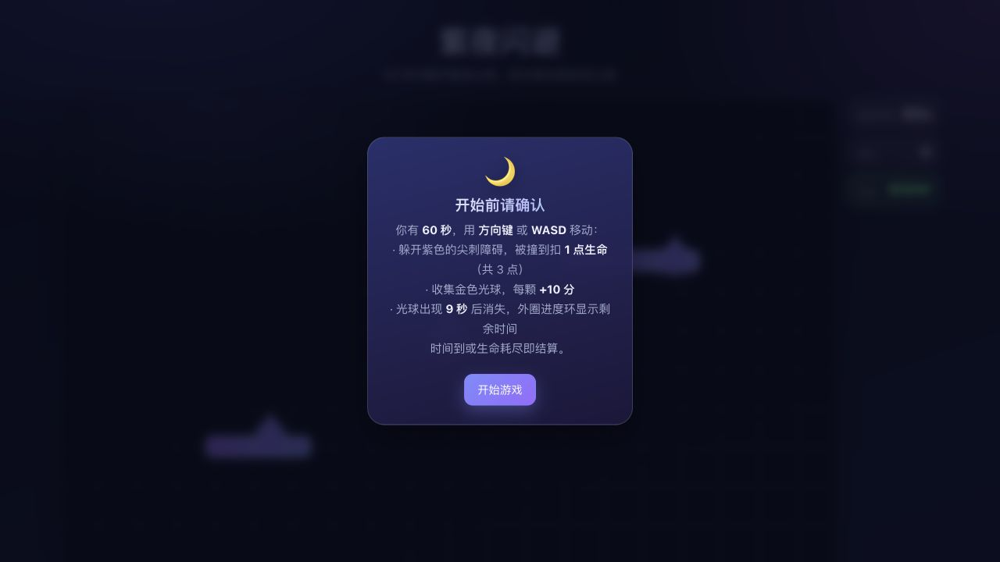
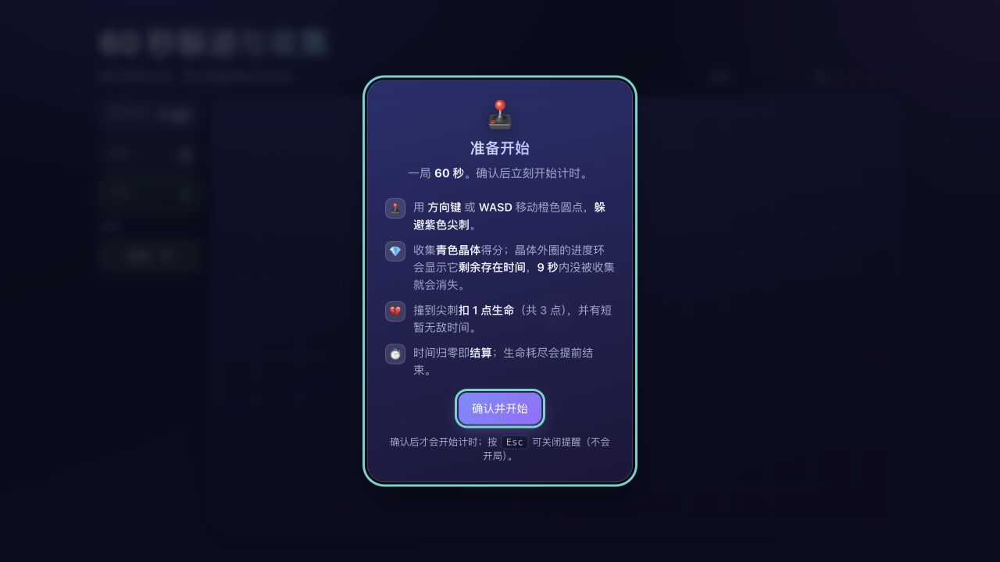
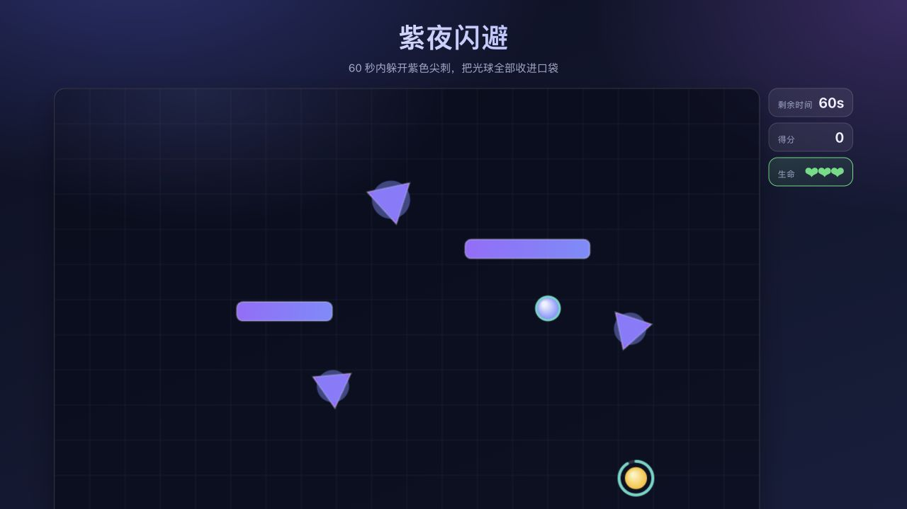
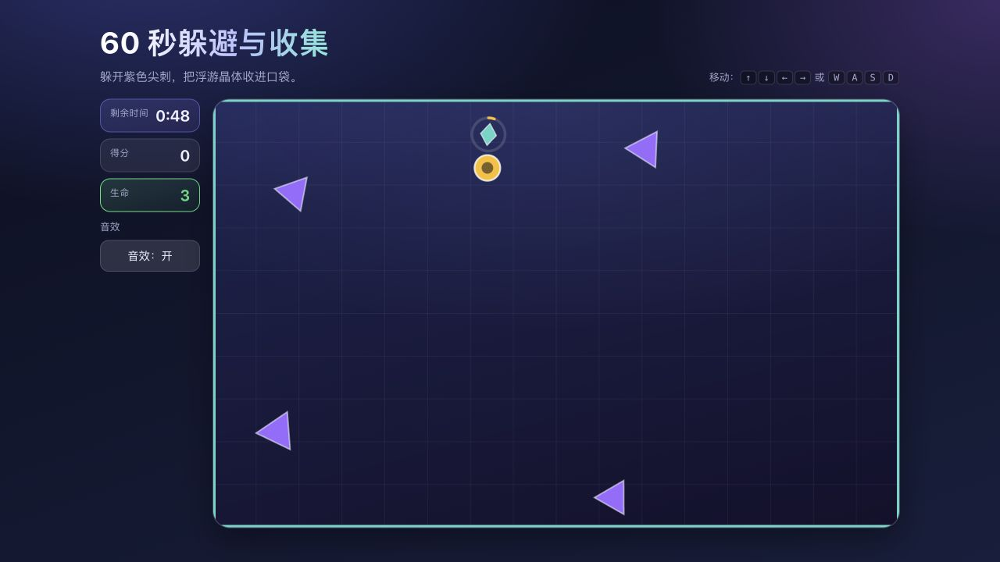
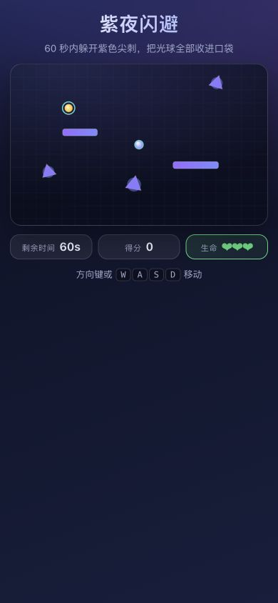
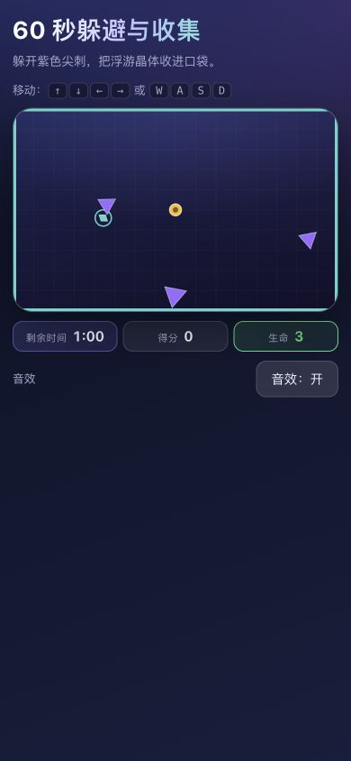
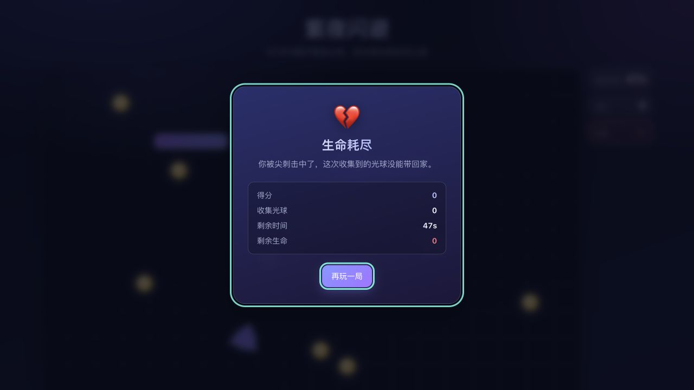
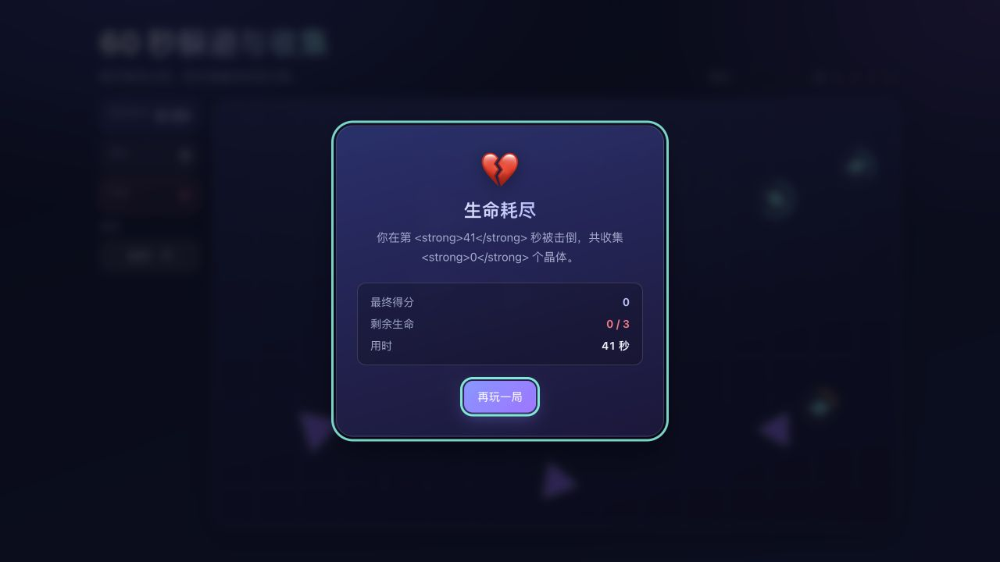

2026-11-14 实验节选。D 为历史两组；E1 为本轮原组件版；E2 为加音效后的首轮失败；E3 为修复游戏后的版本。下方保留实际差异、读取记录和源码节选；游戏入口可分别打开。
通过 HTTP 服务打开游戏；E2 保留初始化失败，不能作为可试玩版本。E1/E2 采用相同新请求，明确要求保留开场、侧栏和限时收集，因此不能把保留项都归因于 Skill。
组件包原有 CSS 与 UI kit，没有声音模块。整页 Skill 的模板提供 Web Audio 与 flip / match / mismatch / win；历史整页游戏扩展 pickup / hurt / tick。迁入的是后者，不能把全部音色都称为模板自带。
{
flip() {
tone(520, 0.07, { type: 'triangle', gain: 0.09 });
},
match() {
tone(660, 0.12, { type: 'sine', gain: 0.13 });
tone(990, 0.16, { type: 'sine', delay: 0.08, gain: 0.11 });
},
mismatch() {
tone(196, 0.2, { type: 'sawtooth', gain: 0.07 });
},
win() {
[523, 659, 784, 1047].forEach((freq, i) => {
tone(freq, 0.26, { type: 'triangle', delay: i * 0.11, gain: 0.13 });
});
},
};
pickup() {
tone(880, 0.08, { type: 'triangle', gain: 0.11 });
tone(1320, 0.12, { type: 'sine', delay: 0.07, gain: 0.1 });
},
/** 撞到障碍，扣血 */
hurt() {
tone(150, 0.26, { type: 'sawtooth', gain: 0.11 });
tone(98, 0.3, { type: 'square', delay: 0.05, gain: 0.08 });
},
/** 开局倒数提示 */
tick() {
tone(720, 0.05, { type: 'sine', gain: 0.08 });
},
};
/bin/zsh -lc "cat .agents/skills/purple-game-ui/templates/src/shell.js; echo '---STORAGE---'; cat .agents/skills/purple-game-ui/templates/src/storage.js; echo '---SOUND---'; cat .agents/skills/purple-game-ui/templates/src/sound.js"
shell.sfx.pickup();
shell.sfx.hurt();
shell.sfx.tick();原始记录缺口：E0 对应的原始执行记录未找到。这里展示保存的实际补丁与文件；后续 E2 的游戏生成日志不是此次 Skill 修改的过程记录。
E0 由主备课 Codex 根据讲师委托修改实验副本，没有独立作者会话。只改正文并增加声音文件；三个 CSS 与 UI kit 不变。
--- before/SKILL.md +++ after/SKILL.md @@ -83,3 +83,13 @@ ## 验证 本 Skill 自带的资源已在 headless Chrome 中渲染核对：深靛渐变背景、玻璃面板、顶部横排 / 侧边 rail / 底部横条三种 HUD 形态、结算浮层（遮罩 + 明细行 + 按钮）、窄屏断点。`assets/preview.html` 可作为回归基线，改动样式后重截对比。 + +## 游戏事件的声音反馈 + +开发可交互小游戏时，沿用现有布局与视觉组件，并接入 `assets/js/purple-sound.js` 的声音反馈；若任务明确要求无声，则不接入。这个独立 ES Module 不依赖页面结构或 `purple-ui-kit.js`，不要为接入声音改变 HUD 位置、浮层用途或玩法效果。 + +- 复制该文件到项目，导入 `sfx`、`setSoundEnabled`、`isSoundEnabled`。音效库来自整页版的声音实现及其躲避游戏中的事件扩展。 +- 按实际游戏事件接线：确认开始可用 `sfx.tick()`，收集成功用 `sfx.pickup()`，受伤用 `sfx.hurt()`；胜利用 `sfx.win()`，失败可用 `sfx.mismatch()`。翻牌和配对仍可用 `flip()`、`match()`。只为游戏实际存在的事件接线，每次事件调用一次，不在绘制循环或持续按键中重复播放。 +- 用明确的音效开关调用 `setSoundEnabled(value)`，用 `isSoundEnabled()`同步状态。首次播放应来自玩家的开始或其他真实操作；浏览器没有音频能力时，游戏仍须可玩。 +- 保留原有可见反馈：声音补充收集、受伤和按钮反馈，不替代闪光、数值变化、浮层等视觉信息，也不规定场地布局。 +- 验证开始、收集、受伤等已接线事件能发声，静音后这些事件不再发声；同时复查原有布局、开场/结算浮层和玩法反馈。
使用当前工作区 .agents/skills/purple-game-ui/SKILL.md，从空项目做一个「60 秒躲避与收集」网页小游戏，沿用 Skill 的紫色界面风格。玩家用方向键或 WASD 移动，躲避障碍，收集物品得分；碰撞扣生命，时间到或生命耗尽时结算，可以重开。只做单一难度，界面不提供难度选择。游玩时游戏读数只显示时间、得分和生命，重开按钮只出现在结算画面。 保留组件组的这些体验：HUD 在桌面端靠场地侧边，窄屏合理排列且不遮挡场地；进入游戏先显示可确认的规则提醒，确认后开始计时；收集物品显示剩余存在时间的进度条或进度环，9 秒未收集会消失；收集、受伤有可见反馈。保留按钮按压与开场、结算浮层的视觉效果。 用原生 HTML/CSS/JS，入口放在根目录 index.html。保持 Skill 文件不变，完成后告诉我用了哪些 Skill 文件。浏览器试玩留给我。
来自本次 with-audio/logs/final.md；以下为模型回复，后续仍须浏览器核对。
游戏已完成。 **使用的 Skill 文件**（Skill 本身未做任何修改，只复制资产） - `.agents/skills/purple-game-ui/SKILL.md` - `.agents/skills/purple-game-ui/assets/css/purple-theme.css` - `.agents/skills/purple-game-ui/assets/css/stat-cards.css` - `.agents/skills/purple-game-ui/assets/css/result-overlay.css` - `.agents/skills/purple-game-ui/assets/js/purple-ui-kit.js` - `.agents/skills/purple-game-ui/assets/js/purple-sound.js` - 参考文档：`references/layout.md`、`references/tokens.md` 注意：用的是 ES Modules，`file://` 会被 CORS 拦截，试玩请起一个静态服务器（如 `python3 -m http.server`）再打开 `index.html`。本环境的 Chrome 进程被沙箱限制无法启动，所以浏览器实测留给你。
/bin/zsh -lc 'cat .agents/skills/purple-game-ui/SKILL.md; echo ---; ls -R .agents/skills/purple-game-ui'
/bin/zsh -lc 'cd .agents/skills/purple-game-ui && cat assets/js/purple-ui-kit.js assets/js/purple-sound.js references/layout.md references/tokens.md'
/bin/zsh -lc 'mkdir -p css js && cp .agents/skills/purple-game-ui/assets/css/purple-theme.css .agents/skills/purple-game-ui/assets/css/stat-cards.css .agents/skills/purple-game-ui/assets/css/result-overlay.css css/ && cp .agents/skills/purple-game-ui/assets/js/purple-ui-kit.js .agents/skills/purple-game-ui/assets/js/purple-sound.js js/ && ls -R css js'
E2 成品接线：查 sfx、setSoundEnabled。实际读取、资源复制与游戏调用分别核对；文件存在不等于已经生效。
import { sfx, setSoundEnabled, isSoundEnabled } from './purple-sound.js';/* ==================================================== 音效开关 ======= */
function refreshSoundBtn() {
const on = isSoundEnabled();
soundBtn.textContent = on ? '音效：开' : '音效：关';
soundBtn.setAttribute('aria-pressed', String(on));
}
soundBtn.addEventListener('click', () => {
setSoundEnabled(!isSoundEnabled());
refreshSoundBtn();
}); state.shake = 0.35;
state.obstacles.splice(i, 1);
burst(p.x, p.y, C.bad, 16);
floater('-1 生命', p.x, p.y, 'bad');
flashField('hurt');
sfx.hurt();
updateHud();
if (state.hp <= 0) {
state.hp = 0;
updateHud(); if (Math.hypot(g.x - p.x, g.y - p.y) < g.r + p.r * 0.8) {
state.gems.splice(i, 1);
state.score += 1;
burst(g.x, g.y, C.accent3, 14);
floater('+1', g.x, g.y, 'good');
flashField('pickup');
sfx.pickup();
updateHud();
}
}
if (Math.random() < dt * 0.9) spawnGem();这是上一轮按组件 Skill 加入音效后生成的游戏，实际浏览器首次加载报错：ReferenceError: Cannot access 'canvas' before initialization，位置 js/game.js:21，画面没有进入开场提醒。请根据这个真实错误修复游戏实现，保留现有布局、开场确认、9秒限时收集进度、可见反馈和已接入的音效及静音。不要修改 .agents/skills 下的任何文件，不要重新生成整个游戏。检查初始化能运行，说明实际修改和未验证项目。浏览器验证留给我。
仅游戏 js/game.js 改动；Skill 与声音资源未改。保留首轮失败；修复后再试玩。
--- first-game/js/game.js
+++ repaired-game/js/game.js
@@ -15,20 +15,6 @@
const INVULN = 1.2; // 受伤后的无敌时间
const W = 960, H = 600;
-
-/* 高分屏清晰渲染 */
-const DPR = Math.min(2, window.devicePixelRatio || 1);
-canvas.width = W * DPR;
-canvas.height = H * DPR;
-
-/* 从主题令牌读取实际颜色（canvas 不认 var()） */
-const CSS = getComputedStyle(document.documentElement);
-const C = {
- accent3: CSS.getPropertyValue('--pg-accent-3').trim() || '#56d6c6',
- accent2: CSS.getPropertyValue('--pg-accent-2').trim() || '#9a6bff',
- warn: CSS.getPropertyValue('--pg-warn').trim() || '#fbbf24',
- bad: CSS.getPropertyValue('--pg-bad').trim() || '#fb7185',
-};
/* ------------------------------------------------------------- DOM */
const canvas = document.getElementById('canvas');
@@ -39,6 +25,43 @@
const introEl = document.getElementById('intro');
const soundBtn = document.getElementById('sound-btn');
const hintEl = document.getElementById('field-hint');
+
+/* 高分屏清晰渲染（必须在拿到 canvas 之后再设置尺寸） */
+const DPR = Math.min(2, window.devicePixelRatio || 1);
+canvas.width = W * DPR;
+canvas.height = H * DPR;
+
+/*
+ * 从主题令牌读取实际颜色（canvas 不认 var()）。
+ * 用惰性 getter 读取，避免样式表尚未解析完时拿到空值。
+ */
+const FALLBACK = {
+ accent3: '#56d6c6',
+ accent2: '#9a6bff',
+ warn: '#fbbf24',
+ bad: '#fb7185',
+};
+const tokenCache = new Map();
+
+function readToken(name, fallback) {
+ if (tokenCache.has(name)) return tokenCache.get(name);
+ let value = '';
+ try {
+ value = getComputedStyle(document.documentElement).getPropertyValue(name).trim();
+ } catch {
+ value = '';
+ }
+ const result = value || fallback;
+ tokenCache.set(name, result);
+ return result;
+}
+
+const C = {
+ get accent3() { return readToken('--pg-accent-3', FALLBACK.accent3); },
+ get accent2() { return readToken('--pg-accent-2', FALLBACK.accent2); },
+ get warn() { return readToken('--pg-warn', FALLBACK.warn); },
+ get bad() { return readToken('--pg-bad', FALLBACK.bad); },
+};
/* ---------------------------------------------------------- HUD 读数 */
const stats = renderStats(hudEl, [
@@ -477,5 +500,6 @@
/* ==================================================== 启动 ========== */
updateHud();
+refreshSoundBtn();
showIntro();
requestAnimationFrame(loop);
来自 with-audio-repaired/logs/final.md；保留修改范围及浏览器未验证项，模拟检查不作为声音试听。
Only `js/game.js` was modified. Layout, HTML, CSS, and the two component files are untouched, and `.agents/skills` was never written to. ## 未验证项（留给你在浏览器确认） - **真实浏览器渲染**：假2D 上下文只验证了调用序列，没有验证像素绘制、字体与 `backdrop-filter` 等视觉效果。
新增：收集、受伤有浏览器音频信号；静音后不再新增声音。保留：开场确认、侧边 HUD、9 秒限时收集、视觉反馈与结算重开。侧栏从右到左，符合本次位置可选择的要求。结算仍有字面量 <strong> 标签；原版额外有触屏拖动，修后版没有，不能声称全部特性无回归。
声音为浏览器信号验证，录前仍需人工试听并检查录屏收音；9 秒消失另经受控逻辑检查，不能称为真人试玩计时证据。一轮实验不代表稳定成功。







